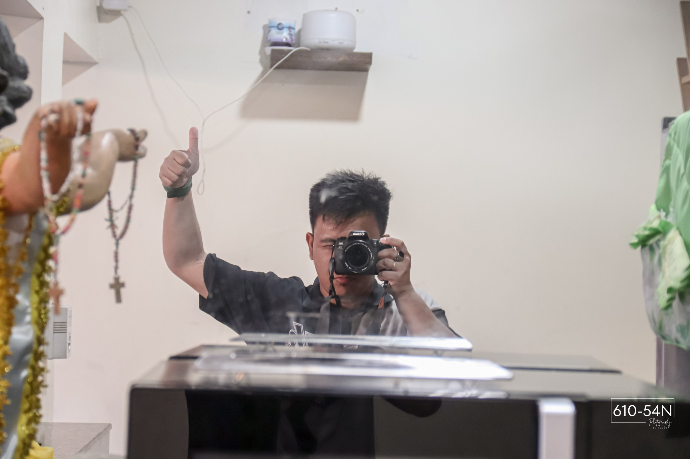
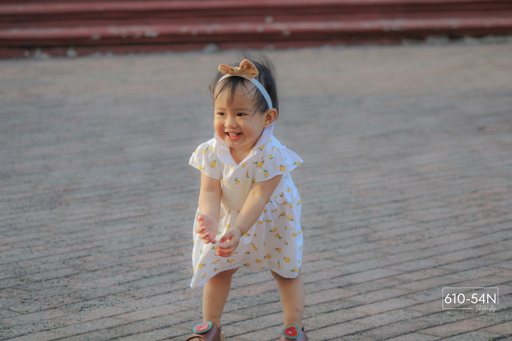

About Us
Gio San Captures and Prints Co. is a team of passionate photographers dedicated to preserving your most cherished memories through our lens. With a keen eye for detail and a commitment to excellence, we strive to create timeless images that tell your unique story. Whether it's a wedding, family gathering, or a special event, we are here to capture the emotions and beauty of every moment, ensuring that your memories are preserved for generations to come. We believe photography is more than taking pictures it is about creating art that tells stories and evokes emotions. Our team works closely with clients to bring their vision to life. At Gio San Captures and Prints Co., we are more than photographers we are memory makers.